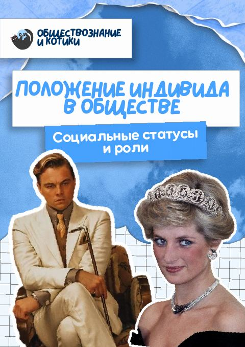
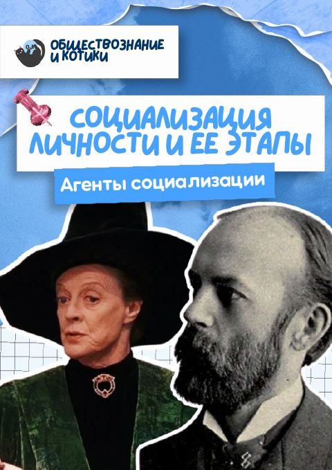
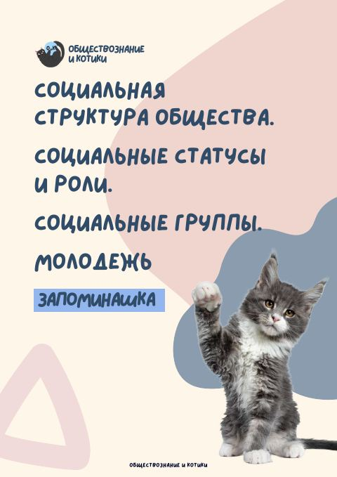

1
Тема · 11 класс · 2 поток
Социальные роли

Социальные роли
и группы
Социальные роли и статусы. Социализация. Социальные группы. Молодёжь. Смотрим видеоуроки, заполняем скрипты, читаем учебник, учим запоминашку, разбираем критерии — и решаем домашнее задание.
01
Видеоуроки
4 урока. Смотрите по порядку и параллельно заполняйте пустой скрипт.
2
1.2 Социализация
Открыть на Rutube ↗
3
1.3 Социальные группы
Открыть на Rutube ↗
4
1.4 Молодёжь как социальная группа
Открыть на Rutube ↗
02
Скрипты
Пустые, с пропусками — распечатайте и заполняйте во время просмотра видеоурока.

для заполнения
для заполнениядля заполнения
для заполнения
03
Конспекты
Те же скрипты, но уже заполненные — чтобы проверить себя или сразу скачать готовый вариант.
готовый
готовый
готовый
готовый
04
Отрывки из учебников ФПУ
Если хочется почитать материал, а не только послушать.
05
Запоминашка
Краткая выжимка того, что нужно именно выучить. учим наизусть!

Запоминашка · 11 класс
Социальная структура. Статусы и роли. Группы. Молодёжь
- Термины и признаки для задания 18: социальный статус, социальная роль, социализация, социальная группа, молодёжь
- Виды социальных статусов: предписанные и достигаемые, временные и постоянные, основные и неосновные
- Различия роли и статуса, виды ролевого конфликта
- Малые и большие социальные группы, особенности молодёжи
06
Примеры для задания 25
Готовые примеры, которые можно использовать в развёрнутых ответах.
07
Критерии
Как устроены задания и за что ставят баллы. Смотрите видео и скачивайте конспект к нему.
I
17
18
19
20
21
22
25
ДЗ
Домашнее задание
Решаем прямо на сайте: тесты проверяются сразу, вторую часть сверяем с эталоном. Каждое задание — по двум подтемам.
1обязательно
Тест · База
Два теста по подтемам. После каждого ответа сразу видно, верно или нет, и пояснение. В конце — баллы.
2дополнительная нарешка
Тест · Про
Задания посложнее — для тех, кто хочет больше практики. Проверка и пояснения тоже сразу.
3развёрнутый ответ
Вторая часть
Сначала напишите ответ сами, потом сверьтесь с эталоном.